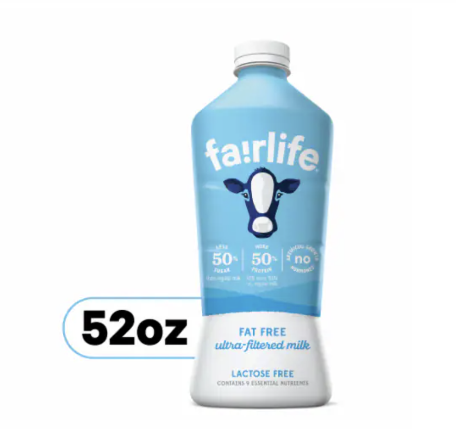
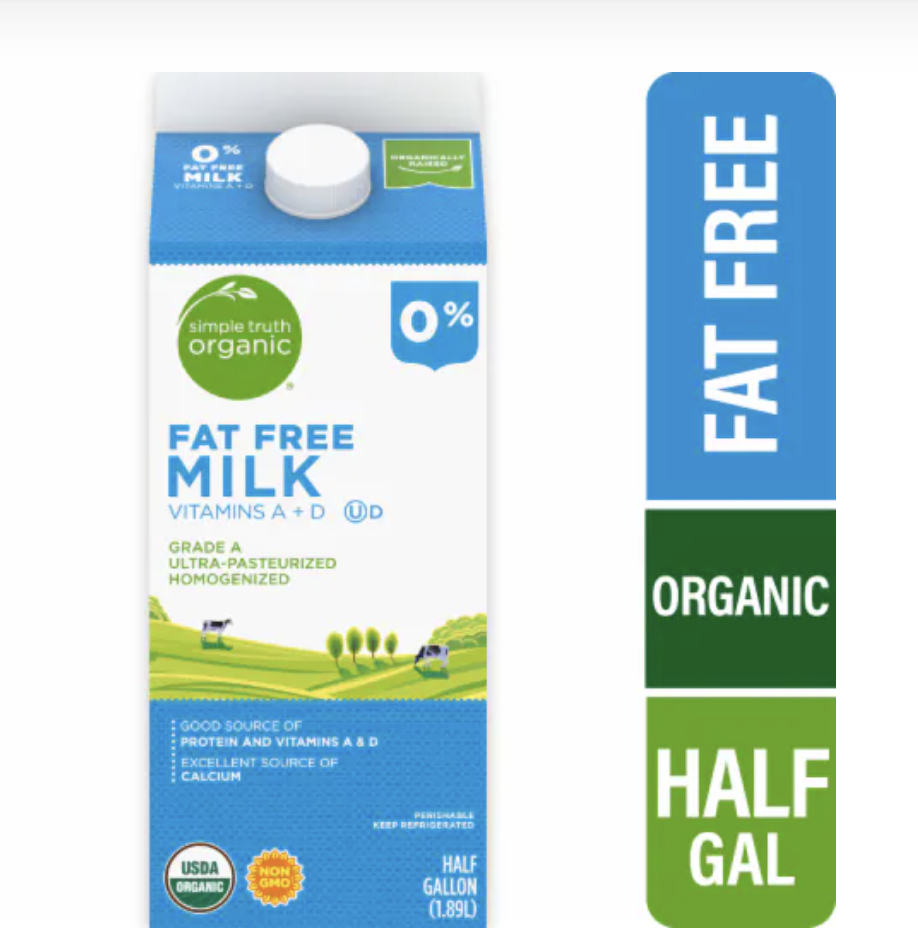
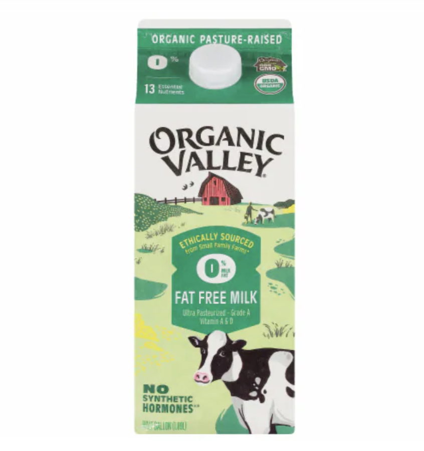
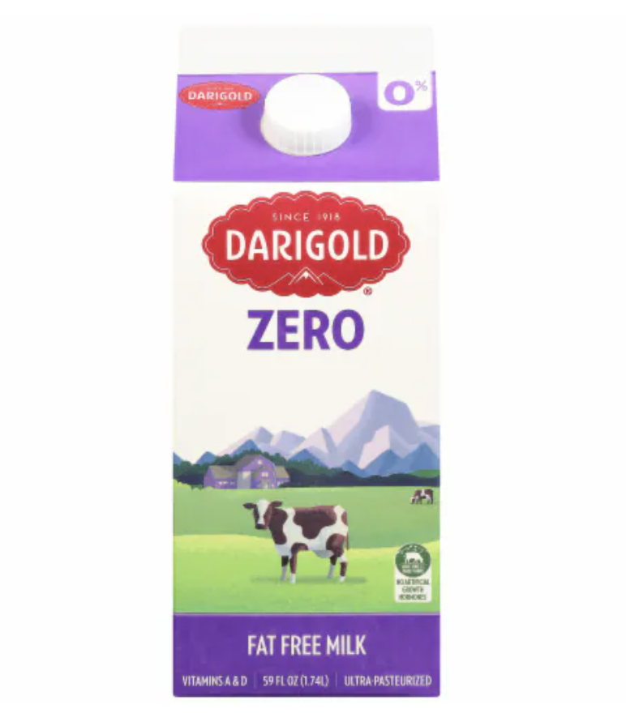

About
The map feature is an intuitive tool designed to enhance your grocery shopping experience by helping you find the best deals and the nearest grocery stores. This map was created using the public Kroger APIs and the Google Maps API to visualize the grocery item price information geographically for Kroger owned grocery stores, such as Quality Food Center (QFC) and Fred Meyer. Each grocery store is displayed with a marker on the map. Clicking on map marker provides additional grocery store details and/or item price.
How to Use
- Item: Enter the item name (general terms like milk, apples, flour etc. are okay)
- Location: Type in a 5-digit U.S. Zip Code
- Search Radius: Use the dropdown list to choose the number of miles within which you want to search for grocery stores
- Filter Results: Review the list of items that match your search term and can be found at local grocery stores
- Select Items Choose at least one item from the provided list
Please select from the following items available:



